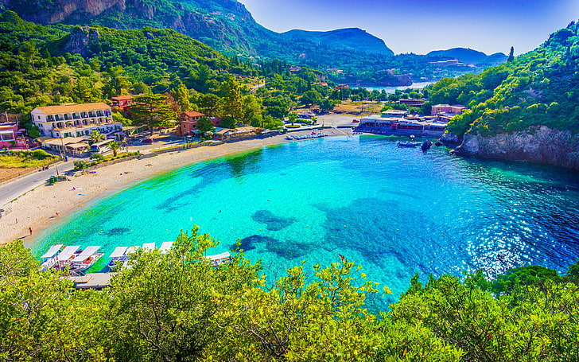

Insula face parte din Arhipelagul Dodecanez, fiind a treia ca dimensiune (după Rhodos și Karpathos) și a doua ca număr de turiști (după Rhodos).
“Insula lui Hipocrat”, așa cum mai este numită, este o insulă mică, aflată în sudul Greciei, la o distanță de 8 km de Bodrum (Turcia).
Insula are o populatie de 30.000 de locuitori și se întinde pe 40 de km2.
Construcțiile în stil roman, munții de pe Kos – care nu sunt foarte înalți, dar care creează un peisaj unic, golfurile liniștite sau plajele care se întind pe 100 de km, toate aceste lucruri fac insula să fie una dintre cele mai iubite de turiști.
Localnicii sunt fermieri, pescari sau agricultori.
Principalele culturi de pe insulă sunt de struguri, migdale, măsline și roșii.

Insula Rhodos este cea mai mare insulă din Arhipeleagul Dodecaneze, dar și cea mai vizitată.
Este a patra cea mai mare insulă din Grecia,localizata la 18 km vest de Turcia, intre partea continentala a Greciei si insula Cipru, la intersecția Mării Egee cu Mediterana.Insula are o populatie de 90.000 de locuitori.
Rhodos are multe obiective turistice istorice,fiind și oraș medieval.
Denumită „Insula Trandafirilor”, Rhodos are și alte avantaje: cazarea este ieftină,iar localnicii vorbesc engleza.
Partea de nord a insulei este renumită pentru obiectivele turistice,iar partea de sud este mai calmă,perfectă pentru relaxare, mai ales că plajele nu sunt aglomerate.
Insula Lefkada face parte din Insulele Ionice ale Greciei,fiind situată pe coasta vestică a țării. Insula Corfu este cea mai nordică dintre Insulele Ionice și este una dintre cele mai vizitate din Grecia, de peste un peste 1 milion de turiști, anual. Zakynthos este una dintre cele mai iubite insule grecesti. Insula Creta este cea mai mare insulă din Grecia,cu o populație de 600.000 locuitori. Însula Skiathos (în traducere „Umbra lui Athos”), este cea mai cunoscută insulă din Arhipelagul Sporadelor de Nord, o mică insulă pitorească de 50 de km2 situata în Marea Egee,la două ore distanță de continent. Mykonos este una dintre cele mai cunoscute insule din Grecia,în special pentru viata de noapte,fiind și destinația preferată a vedetelor de la Hollywood. Insula Santorini este poziționată în Marea Egee, aproximativ la mijlocul distanței dintre Atena și Creta și face parte din Arhipelagul Insulelor Ciclade ale Greciei. Thasos sau Tasos este o insulă din Grecia situată în bazinul nordic al Mării Egee,la 8 km distanță de coasta meridională a Traciei.
Este a patra insulă din Marea Ionică,foarte aproape de continent.
Capitala este Lefkada Town și este legată de continent printr-un pod plutitor.
Așadar, Lefkada este singura insulă care poate fi accesata direct cu maşina.
Insula are 117 km de coastă și o populație de 20 000 de locuitori.
Insula vă va uimi cu plajele înconjurate de stânci albe (cuvântul grecesc „lefkada” se traduce prin „insula albă”).
Există o mulțime de activități pe care le puteți face, de la drumeții, ciclism, până la parapantă sau scufundări.4.Insula Corfu

Denumită „Insula de smarald”, este situată între Marea Ionică și Marea Adriatică,foarte aproape de Grecia continentală și de Albania. Insula are 600 km și o populație de 100.000 de locuitori.
Există stațiuni special dedicate familiilor cu copii sau tinerilor dornici de distractie.
Insula prezintă o diversitate mare de atractii pentru turiști: partea de nord și est a insulei se adreseaza celor care vor aventură și sporturi nautice, distracții și viață de noapte,iar în partea de sud și vest găsim zone liniștite și izolate, perfecte pentru cei care își doresc un concediu relaxant sau pentru cei cu copii. 5.Insula Zakynthos
Preferata lui Artemis si a lui Apollo (sau cel puțin așa se spune),datorită peisajelor idilice, apelor cristaline,apusurilor superbe si a climei blânde. Denumită “Il fiore di Levante” (în traducere “floarea estului”),insula face parte din grupul de Insule Ioniene, având aproximativ 123 km de coastă.
Insula găzduiește câteva dintre cele mai faimoase plaje din Grecia (Navagio, Laganas şi Volimes).
Insula este unul dintre ultimele refugii ale broaştei ţestoase marine Caretta-Caretta şi a focii mediteraniene Monachus-Monachus.
Pentru că sunt pe cale de dispariție, pentru protejarea lor, a fost înfiinţat – în Golful Laganas – Parcul National Marin.6.Insula Creta
Situată în zona estică a Mării Mediteraneene între Europa,Asia și Africa și are un farmec aparte pentru că munții se intâlnesc cu marea.
Insula este una dintre cele mai căutate din Grecia,fiind mărginită de golfuri și se învecinează cu insulițe virgine, cu plaje cu ape turcoaz și nisip fin.
Insula este ideală pentru scufundări datorită clarității apei – cu o translucență pana la o adâncime de 30 de metri,permite observarea specilor de pești, animale marine, plante sau corali.7.Insula Skiathos
Micuța insulă are peste 60 de plaje: cea mai frumoasa este plaja Koukounaries, dar mai sunt alte zeci de plaje micute și retrase cu nisip fin și ape de smarald,ce amintesc de Caraibe.
Vă puteți plimba în jurul insulei pe un iaht închiriat, puteți căuta golfuri ascunse sau puteți ancora pe plaje izolate accesibile numai din mare.
Pentru cei pasionați de aventură, sporturile nautice sunt populare în insulă.
Aeroportul din Skiathos este renumit în rândul pasionaților de avioane. Mulți avgeeks îl numesc St Maarten de Europa.
Când vremea este bună, sute de persoane se adună pe drumul și plaja din capătul pistei pentru a se bucura de avioane.
Trecerile la joasă altitudine,dar și jetblastul sunt principalele atracții.8.Insula Mykonos
Aflată în mijlocul Marii Egee, intre insulele Tinos și Naxos,insula este o aglomerare de straduțe cu case pictate în alb.
Insula are o suprafata de 85.5 km2. și aproximativ 11.000 de locuitori.
Capitala este Mykonos (sau Hora).
Plajele cu nisip alb și foarte fin, viața de noapte, dar și gama variată de sporturi acvatice, atrag foarte multi turisti din vestul Europei,deși este una dintre cele mai scumpe destinații de vacanță din lume.9.Insula Santorini
Insula are o populație de 13.600 de locuitori și o suprafață de 73 km², capitala insulei fiind orașul Thira.
Pe insulă regăsim hoteluri, restaurantae și nenumărate baruri și taverne care să întrețină turiștii atunci când se relaxează după vizitarea obiectivelor turistice sau ale ruinelor sitului arheologice ale vechiului oraș Thera. Santorini are doua plaje foarte cunoscute, Perissa si Kamari, caracterizate prin nisipul neagru.
Santorini este recunoscută pentru apusurile de poveste.10.Insula Thassos
Aria acesteia este de 398 km2, fiind a 12-a, ca mărime, din Grecia și cea mai nordică dintre insulele arhipelagului elen.
Thassos este considerată insula de smarald a Greciei.
Litoralul este stâncos în partea de est si vest și nisipos în nord si sud.
Thassos este considerată ca fiind o insula muntoasă, cel mai înalt punct fiind Ipsarion (1127m).
Datorită climei, insual Thassos poate fi vizitată în orice perioadă a anului.
Să nu vă mire dacă veți vedea păduri de brazi și pini în contrast cu plaje cu ape limpezi și nisip fin.
Cele mai frumoase și frecventate plaje din Thasos sunt Golden Beach si Paradise Beach (nudisti). Dar mai sunt și plajele Alyki, Skala Prinos, Tripiti Beach, Psili Ammos sau Potos Beach.